11-JS语法/数据类型/运算符
1. 目标#
- JS 语法
- JS 数据类型和运算符
2. 主体#

对待JS的态度：取其精华，去其糟粕
1) 表达式与语句#
-
表达式
- 1 + 2 的表达式的值为 3
- add(1, 2) 表达式的值为函数的返回值
- console.log 表达式的值为函数本身
- console.log(3) 表达式的值为 undefined
-
语句
- var a = 1 是一个语句
-
二者的区别
- 表达式一般都有值，语句可能有也可能没有
- 语句一般会改变环境 （声明、赋值）
- 上面两句话并不是绝对的
2) 写法#
-
大小写敏感
- var a 和 var A 是不同的
- object 和 Object 是不同的
- function 和 Function 是不同的
-
空格
- 大部分空格没有实际意义
- 只有一个地方不能加回车，那就是 return 后面
-
标识符
-
规则
- 第一个字符，可以是 Unicode 字母（包括中文） 或 $ 或 _
- 后面的字符，除了上面所说，还可以有数字
-
变量名是标识符，函数、或属性(property) 也是
-
-
好的注释
- 踩坑注释
- 为什么代码会写得这么奇怪，遇到什么 bug
3) if, &&, ||#
-
if 语句
- 表达式里可以非常变态，如 a = 1
-
最推荐使用的写法
if (表达式) { 语句 } else if (表达式) { 语句 } else { 语句 } -
次推荐使用的写法
function fn() { if (表达式) { return 表达式 } if (表达式) { return 表达式 } return 表达式 }
-
&& 短路逻辑
A && B && C && D 取第一个假值 或 D
并不会取 true / false

-
|| 短路逻辑
A || B || C || D 取第一个真值 或 D
并不会取 true / false
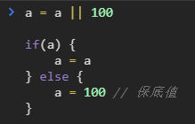
-
总结
-
条件语句
- if ... else ...
- switch
- A ? B : C
- A && B
- fn && fn()
- A || B
- A = A || B
-
4) for, while, break, continue#
-
for, while
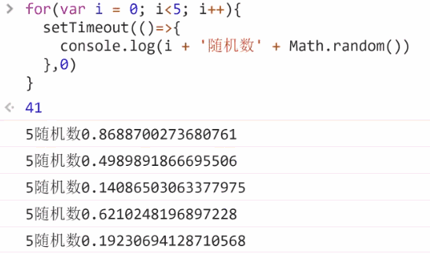
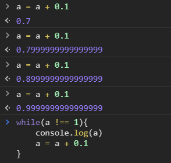
-
break 和 continue
退出所有循环 vs 退出当前一次循环
5) label#
用的很少，面试会考 (概率 5%)
-
语法
foo: { console.log(1); break foo; console.log('本行不会输出'); } console.log(2); -
面试
{ foo: 1 }上面的东西是什么
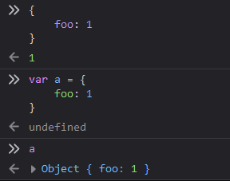
6) 数字与字符串#
-
区别
-
功能不同
- 数字能加减乘除，字符串不行
- 字符串能表示电话号码，数字不行
-
存储形式不同
- JS中，数字是用 64 位浮点数的形式存储的
- JS中，字符串是用类似 UTF8 形式存储的 （UCS-2）
-
-
如何存数字：十进制转二进制即可
-
如何存字符
- ASCII 码
- 国标 2312

- GBK (微软出手了)
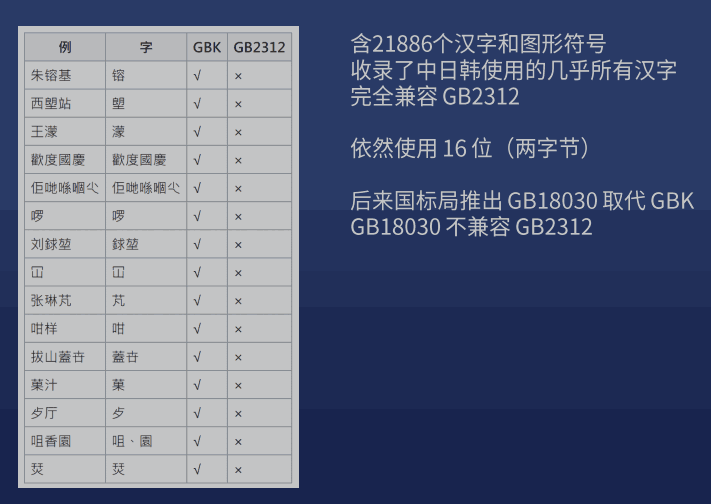
-
Unicode (万国码)
- 优点：已收录13万个字符（大于16位），世界通用
- 缺点：两个字节不够用，每个字符要用三个及以上字节
7) JS 中的数据类型#
7 种（大小写无所谓）
总结：四基两空一对象
不是数据类型：数组、函数、日期
它们都属于 object
- 数字 number
- 字符串 string
- 布尔 bool
- 符号 symbol
- 空 undefined
- 空 null
- 对象 object
-
数字 number
64 位浮点数
-
写法
- 整数
- 小数
-
科学计数
1.23e4
-
八进制
0123 或 00123 或 0o123
-
十六进制
0x3F 或 0X3F
-
二进制
0b11 或 0B11
-
特殊值
-
正0 和 负0
只有一个区别
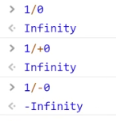
-
无穷大
- Infinity、+Infinity、-Infinity
-
无法表示的数字
- NaN (Not a Number)
- 但它是一个数字 (讲一下历史)
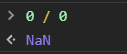
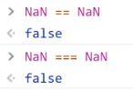
-
-
浮点数


-
-
字符串 string
每个字符两个字节 （阉割版 UTF8）
-
写法
-
单引号
'你好'
-
双引号
"你好"
-
反引号
`你好`

-
-
转义：
-
写法
- 'it\'s ok'
- "it's ok"
- `it's ok`


-
-
字符串的属性
对象才有属性，为什么字符串也有属性？
等学完对象才能回答
-
string.length
- 通过下标读取字符: string[index]
- base64
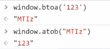
-
-
布尔 boolean:
true / false
-
下列运算符会得到 bool 值
-
否定运算
!value
-
相等运算
1 == 2、1 != 2、3 === 4、3 !== 4
-
比较运算
1 > 2、1 >= 2、3 < 4、3 <= 4
-
-
5个 falsy 值
falsy 就是相当于 false 但又不是 false 的值
undefined、null、0、NaN、''
-
undefined 和 null
为什么有两种空类型？
这是 JS 的垃圾之处
-
区别 (没有本质区别)
- 如果一个变量声明了，但没有赋值，那么默认值就是 undefined，而不是 null
- 如果一个函数，没有写 return，那么默认 return undefined，而不是 null
- 前端程序员习惯上，把非对象的空值写为 undefined，把对象的空值写为 null
-
-
8) 变量声明#
指定值，同时也指定了类型
但是值和类型都可以随意变化


-
三种声明方式
-
var a = 1
过时的，不好用的方式
var 变量提升（看网道）
-
let a = 1
新的，更合理的方式
-
let声明 规则
- 遵循块作用域，即 使用范围不能超出 {}
- 不能重复声明
- 可以赋值，也可以不赋值
- 必须先声明再使用，否则报错
- 全局声明的 let 变量，不会变成 window 的属性
- for 循环配合 let 有奇效
-
-
const a = 1
声明时必须赋值，且不能再改的方式
-
const声明 规则
- 跟 let 几乎一样
- 只有一条不同：声明时就要赋值，赋值后不能改
-
-
9) 类型转换#
-
number => string
- String(n)
- n + ''
bug
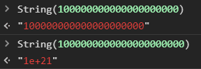
-
string => number
- Number(s)
- parseInt(s) / parseFloat(s)
- s - 0
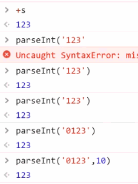
-
x => bool
- Boolean(x)
- !!x
-
x => string
- String(x)
- x.toString()
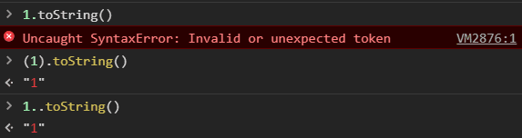